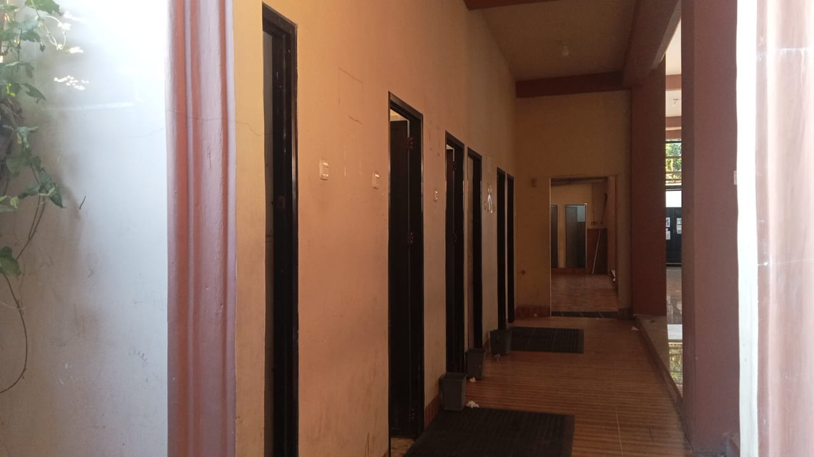
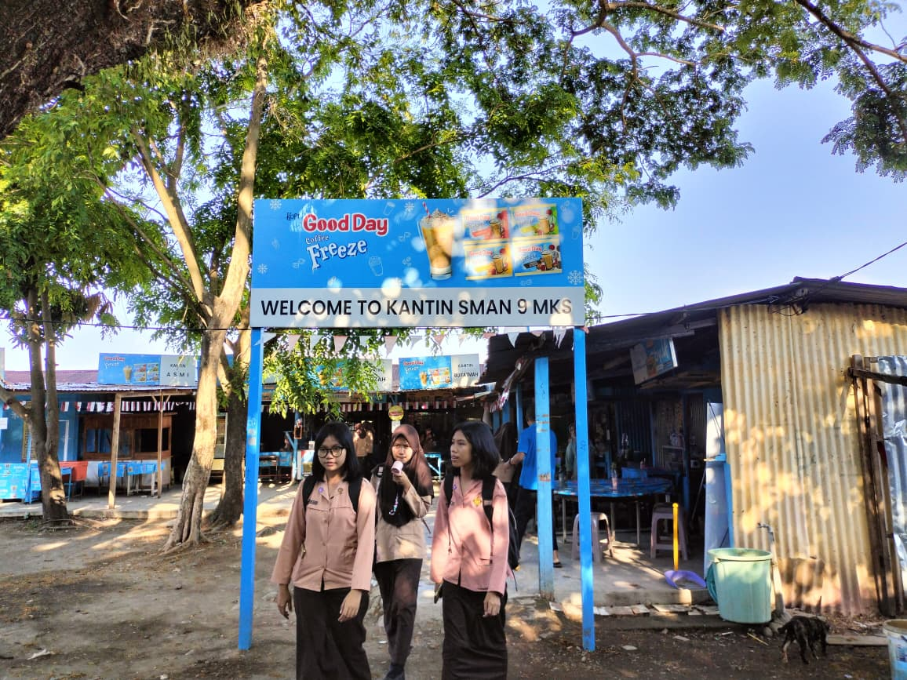
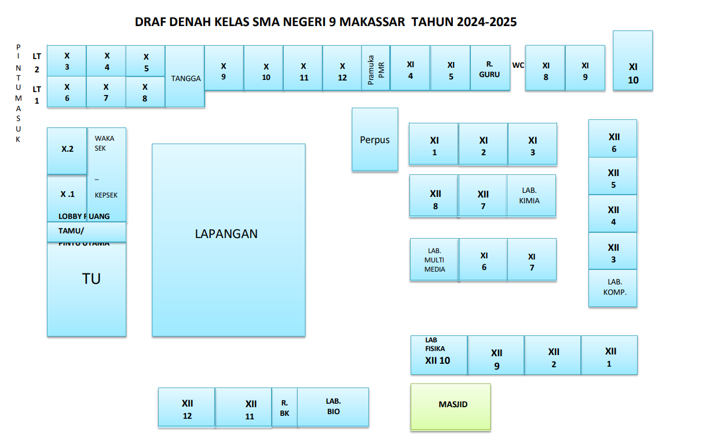

Fasilitas
Berikut daftar fasilitas yang tersedia di SMA Negeri 9 Makassar.
| No. | Nama Fasilitas | Keterangan | Jumlah | Foto |
|---|---|---|---|---|
| 1 | Laboratorium Kimia | Ruang praktik Kimia lengkap dengan alat eksperimen | 1 |

|
| 2 | Laboratorium Komputer | Ruang komputer untuk praktik pemrograman dan multimedia | 1 |

|
| 3 | Perpustakaan | Koleksi buku pelajaran, referensi, dan ruang baca | 1 |

|
| 4 | Lapangan Olahraga | Lapangan serbaguna untuk basket, futsal, dan upacara | 1 |

|
| 5 | UKS | Unit Kesehatan Sekolah untuk layanan kesehatan dasar dan pertolongan pertama. | 1 |

|
| 6 | Toilet | Toilet siswa dan guru yang terpisah, tersedia di setiap blok gedung. | 8 |
 |
| 7 | Kantin | Menyediakan makanan dan minuman sehat untuk siswa dan guru. | 1 |
 |
| 8 | Masjid | Tempat ibadah untuk siswa, guru, dan warga sekolah. | 1 |

|
Denah Sekolah
Berikut adalah denah SMA Negeri 9 Makassar untuk tahun ajaran 2024-2025:
